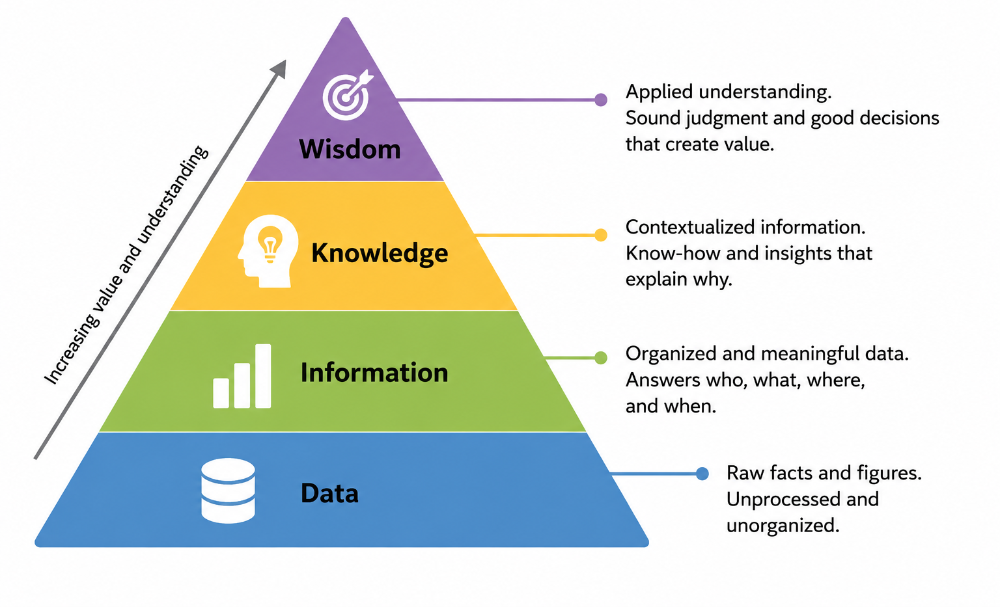

1.2 Data, Information and Information Systems
Building from First Principles: Data, Information, and Systems
To understand how these systems build business value, one must build an understanding from first principles. Organizations are continuously flooded with stimuli, but only a fraction of those inputs are converted into strategic progress. This progression is conceptualized by the Data-Information-Knowledge-Wisdom (DIKW) Pyramid, a framework illustrating how raw inputs are refined into actionable competitive decisions23.
Figure 1.2a The Data-Information-Knowledge-Wisdom (DIKW) Pyramid

Source: Author-created adaptation.
Show long description
The figure presents the Data-Information-Knowledge-Wisdom, or DIKW, pyramid on a white background. A large triangular pyramid is centered in the image and divided into four horizontal tiers that increase in meaning and value from bottom to top. The bottom tier is blue and labeled “Data,” with an icon suggesting raw stored facts. To the right, a callout explains that data are raw facts and figures that are unprocessed and unorganized. The second tier is green and labeled “Information,” with a bar-chart style icon. Its callout states that information is organized and meaningful data that answers who, what, where, and when. The third tier is yellow-orange and labeled “Knowledge,” with a head-and-lightbulb icon. Its callout says knowledge is contextualized information, including know-how and insights that explain why. The top tier is purple and labeled “Wisdom,” with a target icon. Its callout explains that wisdom is applied understanding, involving sound judgment and good decisions that create value. Along the left side of the pyramid, an upward arrow labeled “Increasing value and understanding” shows that each higher level represents a more advanced form of insight. The overall message is that organizations move from raw data to actionable wisdom as information becomes more organized, contextualized, and useful for decisions.
At the base of the pyramid sits data. Data represents raw, unformatted, and uncontextualized facts, observations, or symbols. By itself, raw data lacks meaning and is of little immediate value to a manager23. For example, the number 1435 or the string DEN-ORD are merely isolated pieces of data.
When data is sorted, cleaned, structured, and contextualized, it transforms into information. Information answers the foundational questions of "who," "what," "where," and "when". For instance, organizing the raw data points into a structured record showing that "Flight 1435 from Denver (DEN) to Chicago (ORD) is currently delayed by 45 minutes" provides valuable context to airport operations.
As managers analyze this information over time, patterns emerge, leading to knowledge23. Knowledge answers the question of "how". It is the human or algorithmic synthesis of structured information combined with experience, organizational rules, and analytical rigor.
An airline manager leveraging knowledge understands that "when winter weather causes delays at Denver (DEN) exceeding 30 minutes, 15% of connecting passengers will miss their flights to Chicago (ORD), requiring proactive rebooking."
At the pinnacle of the pyramid lies wisdom23. Wisdom addresses the question of "why"25. It represents the strategic application of knowledge over the long term, taking into account financial trade-offs, competitive dynamics, ethical considerations, and market positioning.
An example of wisdom: An executive team demonstrating wisdom realizes that relying on a point-to-point network architecture without investing in automated, real-time rescheduling software creates systemic operational risks that threaten the survival of the brand4.
An Information System (IS) is the organized combination of technology, people, and processes designed to collect, process, store, and distribute data to support decision-making, coordination, control, and strategy within an organization28. An effective information system is built upon a six-component framework30:
Hardware: The physical machinery of computing, including servers, cloud data centers, smartphones, Point-of-Sale (POS) terminals, and edge sensors.
Software: The digital instructions that command the hardware, ranging from enterprise-grade database management systems and operating systems to custom mobile applications.
Data: The raw asset and fuel of the system, stored securely in relational databases, data warehouses, or vector stores.
Network Communications: The connectivity pathways—including fiber-optic lines, cellular networks, and local Wi-Fi—that link physical assets and data repositories together.
Processes (or Procedures): The step-by-step human workflows, organizational rules, and operational policies that dictate how tasks are executed and how technology is utilized.
Structures: information flows and how people perform work are affected by authority structures, communication channels, culture, functional structures, the definition of business units, etc.
People: The human actors within the ecosystem, including system architects, software engineers, database administrators, frontline employees, and end-user customers.
A common pitfall for inexperienced managers is focusing exclusively on the technological components—the hardware, software, network, and data30. Yet, the vast majority of corporate technology failures occur because of a misalignment among the human elements: the processes and the people.
Southwest Airlines had functional hardware and software; however, its manual processes (requiring crew members to call a central phone number) and the resulting cognitive overload on its people collapsed the entire operation1. Technology is merely a tool; value is realized only when the technology is seamlessly integrated with human workflows and organizational capabilities11.
From Components to Competitive Advantage
Once managers understand what an information system is, the next question is what it is for. Not every system creates lasting advantage. Strategy scholar Michael Porter’s distinction between operational effectiveness and strategic positioning supplies a useful lens.32
Operational effectiveness means performing similar activities better, faster, or cheaper than rivals. Many information systems exist solely for this purpose; they are tactical information systems. Standard payroll, general-ledger, and off-the-shelf inventory tools fall into this category. They are necessary for competitive parity, yet because they are widely available as commercial software or SaaS subscriptions, they rarely produce durable advantage.7
Strategic positioning, by contrast, means performing different activities from rivals or performing similar activities in different ways.32 This is the domain of strategic information systems (SIS). An SIS restructures a firm’s value chain, locks in customers, raises barriers to entry, or enables new business models.
To judge whether a system can support sustainable competitive advantage—a persistent performance edge that rivals cannot easily copy—managers apply the Resource-Based View and its VRIO test.37 A resource or capability must be:
- Valuable – Does it help the firm exploit opportunities or neutralize threats?
- Rare – Is it controlled by only a few current or potential competitors?
- Inimitable (and non-substitutable) – Is it costly or difficult for rivals to copy or replace?
- Organized – Is the firm structured, funded, and culturally ready to capture its full value?
Software code and hardware devices by themselves are seldom rare or inimitable. The strategic asset is almost always the unique bundle of technology with proprietary data, specialized processes, and human expertise. When that bundle is valuable, rare, hard to imitate, and well organized, it can become a source of lasting advantage.
Data as a strategic asset. Among the seven components, data increasingly functions as a core source of advantage in its own right. Proprietary, high-quality data that improve with use can create data network effects: the more the system is used, the better its predictions and recommendations become, which attracts more users and generates still more data. Firms that treat data merely as fuel for applications miss this dynamic. Those that deliberately invest in data quality, unique data collection, and the organizational ability to act on insights turn data into a VRIO resource. Domino’s direct ownership of customer ordering data (rather than relying on third-party aggregators) and John Deere’s continuous stream of field-level sensor data both illustrate the point.
This dynamic is illustrated by comparing standard tactical systems with proprietary strategic ecosystems:
| Strategic Dimension | Tactical System: Standard SaaS ERP | Strategic System: Custom Logistics Platform |
|---|---|---|
| V - Valuable? | Yes. It streamlines back-office administrative accounting37. | Yes. It optimizes real-time delivery routes and labor allocation11. |
| R - Rare? | No. Any competitor with a credit card can license the identical software7. | Yes. Custom-built and calibrated to the firm's specific physical footprint16. |
| I - Inimitable? | No. Competitors can replicate the workflows by purchasing the same tool7. | Yes. Replicating it requires copying years of proprietary operational data and culture11. |
| O - Organized? | Yes. Standard procedures are well-documented40. | Yes. Deeply integrated with franchise structures and training platforms11. |
| Strategic Outcome | Competitive Parity. Necessary to operate, but does not drive superior margins37. | Sustainable Competitive Advantage. Creates a defensible barrier to entry35. |
The Historical Evolution of Enterprise Computing
To understand the architecture of modern enterprise technology, one must look back at how computing models have evolved. Over the past seventy years, organizational IT has shifted through distinct eras, with each wave democratizing computing power and altering how firms compete.
The Mainframe Era (1950s–1970s)
In the infancy of business computing, systems were characterized by massive, centralized mainframes housed in specialized, climate-controlled rooms. These machines were incredibly expensive, creating a high barrier to entry that only large corporations or government institutions could afford. Computing was strictly transaction-focused, running batch-processing operations for accounting, payroll, and billing.
The systems were guarded by an insular "IT priesthood" of technical specialists; business managers had virtually no direct contact with the technology. Strategic value was limited to driving internal administrative efficiencies.
The Client-Server and PC Revolution (1980s–1990s)
The introduction of the personal computer (PC) dismantled the centralized mainframe model. Computing power was decentralized, placing a computer directly on the desk of individual business professionals. This era saw the rise of Client-Server Architecture, where desktop applications ("clients") made requests to local department servers.
Crucially, this period saw the emergence of massive, integrated Enterprise Resource Planning (ERP) monoliths (such as SAP and Oracle). Relational databases became the standard repository of corporate truth, linking sales, finance, manufacturing, and HR into a single software suite.
The strategic focus shifted to optimizing the global supply chain, though these monolithic systems were notoriously rigid, requiring years of implementation effort and tens of millions of dollars in capital expenditure (CapEx).
The Cloud, Mobile, and SaaS Era (2000s–2010s)
The widespread adoption of high-speed internet and virtualization technologies gave birth to Cloud Computing. Instead of purchasing and maintaining expensive physical servers, firms could lease storage, databases, and computing power on demand from hyperscale cloud providers like Amazon Web Services (AWS) or Microsoft Azure. This shift transformed technology funding from a high-risk capital expense (CapEx) to a flexible operational expense (OpEx)7.
Concurrently, Software-as-a-Service (SaaS) models emerged, delivering applications directly through web browsers. The rise of smartphones extended information systems directly into the pockets of employees and consumers, paving the way for the gig economy (such as Uber and Airbnb) and establishing mobile apps as the primary interface for customer engagement17.
The Modern Microservices and API Era (2020s–Present)
Today, organizations have moved away from rigid, monolithic software designs toward a microservices architecture42. Under this model, applications are broken down into small, modular, independent software services that perform a single, specific function42. These services communicate with one another using standardized interfaces known as Application Programming Interfaces (APIs).
This modularity allows software engineering teams to continuously deploy updates to individual parts of a system (e.g., updating the payment gateway) without having to take down the entire platform, minimizing operational disruptions and accelerating the pace of innovation42.
Key Terms and Definitions
- Technical Debt
- The compounding operational, financial, and temporal cost of maintaining outdated, legacy technological systems instead of investing in modern, scalable infrastructure3.
- Information System
- An integrated, six-component framework comprised of hardware, software, data, network communications, procedures, and people, designed to collect, process, store, and distribute information to support organizational strategy28.
- Data
- Raw, unformatted, and uncontextualized facts, observations, or symbols that lack inherent meaning on their own23.
- Data as a Strategic Asset
- Data as a strategic asset means treating data not just as a byproduct of business operations, but as a source of competitive advantage in its own right. When firms collect proprietary, high-quality data and use it effectively, that data can improve predictions, recommendations, and decisions over time. In some cases, greater use creates data network effects: the more the system is used, the more data it generates, and the better it becomes. Firms that invest in data quality, unique data collection, and the ability to act on insights can turn data into a valuable, hard-to-copy resource.
- Information
- Data that has been cleaned, structured, and contextualized to answer the foundational questions of "who," "what," "where," and "when"23.
- Knowledge
- Processed, synthesized information that has been integrated with human experience, rules, and analytical context to understand "how" to solve business problems23.
- Wisdom
- The long-term, strategic application of knowledge that evaluates "why" decisions are made, incorporating financial, competitive, ethical, and organizational trade-offs23.
- Operational Effectiveness
- Performing similar operational activities better, faster, or cheaper than competitors, which is necessary for survival but rarely yields a sustainable competitive advantage32.
- Strategic Positioning
- Performing different activities from rivals, or performing similar activities in different ways, using technology to build a unique and defensible market position32.
- Resource-Based View (RBV)
- A strategic management framework proposing that sustainable competitive advantage is achieved when a firm controls resources and capabilities that are Valuable, Rare, Inimitable, and Organized (VRIO)37.
- Data as Strategic Asset
- Proprietary, high-quality data that improve with use and can generate data network effects, becoming a source of VRIO advantage when combined with the ability to act on
insights. - Microservices Architecture
- A software design methodology where a large application is dismantled into a modular suite of small, independent, and decentralized services that communicate via standard APIs42.
- Application Programming Interfaces (APIs)
- A set of rules and protocols that allow one software application to communicate with another by requesting data or services in a structured and standardized way.
- Ownership Paradox
- The strategic friction point that occurs when a physical product is heavily driven by proprietary software, leaving the buyer with physical ownership of the machine but technological dependence on the manufacturer for updates and repairs51.
Footnotes
- 2022 Southwest Airlines scheduling crisis - Wikipedia, https://en.wikipedia.org/wiki/2022_Southwest_Airlines_scheduling_crisis
- The Southwest Airlines Winter Meltdown Case studies on risk, technical debt, operations, passengers, regulators, revenue, and brand - ERIC, https://files.eric.ed.gov/fulltext/EJ1448977.pdf
- Lessons from the Runway: How Southwest's System Crash Illuminates Healthcare's Technical Debt Problem | UCSF Synapse, https://synapse.ucsf.edu/articles/2025/02/18/lessons-runway-how-southwests-system-crash-illuminates-healthcares-technical
- Factors Influencing Southwest Airlines' Operational Failures (2022-23): Lessons from Corporate Strategy and Frontline Employees, https://commons.erau.edu/cgi/viewcontent.cgi?article=1595&context=db-srs
- Report 2357 - AI Incident Database, https://incidentdatabase.ai/reports/2357/
- Southwest Airlines Lost Track of Its Own Pilots. That's When I Knew Chatbots Wouldn't Save Logistics. - Medium, https://medium.com/@ashutosh_veriprajna/southwest-airlines-lost-track-of-its-own-pilots-4fb4669a12a0
- TIL: During the Christmas/NYE holiday season of 2022, a winter storm caused Southwest Airlines' (ancient) crew scheduling software to break down, stranding crew members and cancelling 50% of flights between 21-30 December. Losses were reportedly between $1.1 billion to over $1.2 billion. : r/todayilearned - Reddit, https://www.reddit.com/r/todayilearned/comments/1n992qx/til_during_the_christmasnye_holiday_season_of/
- Written Testimony of Captain Casey Murray President Southwest Airlines Pilots Association (SWAPA) February 9, 2023 Before the Co - Senate Commerce Committee, https://www.commerce.senate.gov/wp-content/uploads/media/doc/Captain%20Casey%20Murray%20Testimony%20Senate%20CST%20Feb2023%20.pdf
- Southwest Airlines Didn't Crash, but It Nearly Fell Apart … - ISCAP Conference, https://iscap.us/proceedings/2023/pdf/5907.pdf
- How Domino's “Pizza Turnaround” Became a Masterclass in Food PR - Everything-PR, https://everything-pr.com/how-dominos-pizza-turnaround-became-a-masterclass-in-food-pr
- How Domino's Reinvented Itself from a Pizza Punchline to a Tech-Driven Delivery Leader, https://www.chiefreinventionofficer.com/blog-page/how-dominos-reinvented-itself-from-a-pizza-punchline-to-a-tech-driven-delivery-leader
- Digital Ecosystem and its opportunities ADDRESS by Venkateshawaran, https://sidtm.edu.in/wp-content/uploads/2025/05/June-23-to-May-24Workshop-2.pdf
- 2011 ARF David Ogilvy Awards - Domino's Pizza: Pizza Turnaround Case Study - AWS, https://thearf-org-unified-admin.s3.amazonaws.com/ARF%20Ogilvy%20Award%20Case%20Studies/2011%20ARF%20David%20Ogilvy%20Award%20CS/2011_Domino%27s%20Pizza_Case%20Study.pdf
- Domino's, the technology company that sells pizza - Serhan H. Süzer, https://serhansuzer.com/en/dominos-the-technology-company-that-sells-pizza/
- How Domino's Became a 'Technology Company' - Words from Shirley Wu, https://shirleywu.home.blog/2019/03/02/how-dominos-became-a-technology-company/
- Inside the 'AnyWare' digital strategy at Domino's Pizza - InnoLead - Innovation Leader, https://www.innovationleader.com/food-and-beverage/inside-the-anyware-digital-strategy-at-dominos-pizza/
- Domino's Pizza Digital Transformation: A Case Study - YouTube, https://www.youtube.com/watch?v=p0ohr1ayZh0
- Tech with a Side of Pizza: How Domino's Rose to the Top - Case - Faculty & Research, https://www.hbs.edu/faculty/Pages/item.aspx?num=59435
- Domino's Pizza's Strategy for Staying On Top - Indigo9 Digital Inc., https://www.indigo9digital.com/blog/dominospizzastrategy
- Domino's AnyWare, https://anyware.dominos.com/
- You'll Soon Be Able to Order Domino's Pizza From Your Car - The Spoon, https://thespoon.tech/youll-soon-be-able-to-order-dominos-pizza-from-your-car/
- Introducing Domino's® on Apple CarPlay®: The Easiest Way to Order Pizza on the Go, https://www.prnewswire.com/news-releases/introducing-dominos-on-apple-carplay-the-easiest-way-to-order-pizza-on-the-go-301791342.html
- DIKW Pyramid | Library and Information Science | Research Starters - EBSCO, https://www.ebsco.com/research-starters/library-and-information-science/dikw-pyramid
- DIKW pyramid - Wikipedia, https://en.wikipedia.org/wiki/DIKW_pyramid
- The DIKW Pyramid and the Process of Conducting an Advanced Review | Announce - News, https://newsroom.unl.edu/announce/libraries/18016/98817
- Data, Information, Evidence, and Knowledge: A Proposal for Health Informatics and Data Science - PMC, https://pmc.ncbi.nlm.nih.gov/articles/PMC6435353/
- What Is the Data, Information, Knowledge, Wisdom (DIKW) Pyramid? - Ontotext, https://www.ontotext.com/knowledgehub/fundamentals/dikw-pyramid/
- All 8 Types of Information Systems: A Full Breakdown - Syracuse University's iSchool, https://ischool.syracuse.edu/types-of-information-systems/
- 1.1 Introduction to Information Systems - OpenStax, https://openstax.org/books/foundations-information-systems/pages/1-1-introduction-to-information-systems
- 1.2: Identifying the Components of Information Systems - Workforce LibreTexts, https://workforce.libretexts.org/Bookshelves/Information_Technology/Information_Systems/Information_Systems_for_Business/01%3A_What_Is_an_Information_System/01%3A_What_Is_an_Information_System/1.02%3A_Identifying_the_Components_of_Information_Systems
- What is an Information System? Definition & Overview - PlexTrac, https://plextrac.com/what-is-an-information-system-defined-and-outlined/
- Refer To The Multibillion Dollar Factories Used To Manufacture Semiconductors - Scribd, https://www.scribd.com/document/1019477496/Refer-to-the-Multibillion-Dollar-Factories-Used-to-Manufacture-Semiconductors
- Information Systems: A Manager's Guide to Harnessing Technology [9.1 ed.] 9781453341698 - DOKUMEN.PUB, https://dokumen.pub/information-systems-a-managers-guide-to-harnessing-technology-91nbsped-9781453341698.html
- https://ischool.syracuse.edu/types-of-information-systems/#:~:text=The%20key%20components%20of%20an,and%20enterprise%20resource%20planning%20systems.
- (PDF) Perceptions of Blockchain's Impact on Competitive Capabilities - ResearchGate, https://www.researchgate.net/publication/389592163_Perceptions_of_Blockchain's_Impact_on_Competitive_Capabilities
- The digital innovations that took Domino's from pizza place to tech titan - NCR Voyix, https://www.ncrvoyix.com/resources/blog/the-digital-innovations-that-took-dominos-from-pizza-place-to-tech-titan
- VRIO Analysis – Strategic Management - Open Educational Resources, https://open.oregonstate.education/strategicmanagement/chapter/4-vrio-analysis/
- Determining Factors Sustainable Competitive Advantage in Private Higher Education - TEM JOURNAL, https://www.temjournal.com/content/141/TEMJournalFebruary2025_562_573.pdf
- Dynamic Capabilities and MNE Global Strategy: A Systematic Literature Review‐Based Novel Conceptual Framework - Joseph T. Mahoney, https://josephmahoney.web.illinois.edu/BADM504_Fall%202019/Pitelis,%20Teece,%20and%20Yang%20(2024).pdf
- Developing Strategy Through Internal Analysis | Principles of Management, https://courses.lumenlearning.com/atd-tc3-management/chapter/developing-strategy-through-internal-analysis/
- (PDF) An Approach to an Open Resource-Based View - ResearchGate, https://www.researchgate.net/publication/280612404_An_Approach_to_an_Open_Resource-Based_View
- Domino's Pizza - Case study | Solo.io, https://www.solo.io/resources/case-study/dominos-pizza-uk
- RAG in 2026: How Retrieval-Augmented Generation Works for Enterprise AI - Techment, https://www.techment.com/blogs/rag-in-2026/
- Enterprise RAG: Building an AI Knowledge Base in 2026 | Cran - Keerok, https://keerok.tech/en/blog/enterprise-rag-building-an-ai-knowledge-base-in-2026/
- (PDF) Generative AI Integration and RAG-Based Enterprise Tooling: Architectures, Techniques, and Organizational Impact - ResearchGate, https://www.researchgate.net/publication/403888941_Generative_AI_Integration_and_RAG-Based_Enterprise_Tooling_Architectures_Techniques_and_Organizational_Impact
- RAG in 2026: The Enterprise Guide to GraphRAG, Guardrails & Real ROI - Squirro, https://squirro.com/squirro-blog/state-of-rag-genai
- RAG Models in Generative AI: Improve Accuracy, Trust & Enterprise ROI - Appinventiv, https://appinventiv.com/blog/rag-in-generative-ai/
- Technology and Innovation | John Deere US, https://www.deere.com/en-us/our-company/technology-and-innovation
- John Deere: 'We're a technology company' - innovation Iowa, https://innovationia.com/2023/03/09/john-deere-were-a-technology-company/
- How John Deere Uses Industrial AI in Precision Agriculture - Databricks, https://www.databricks.com/blog/2021/07/09/down-to-the-individual-grain-how-john-deere-uses-industrial-ai-to-increase-crop-yields-through-precision-agriculture.html
- When a product becomes a platform - John Deere - I by IMD, https://www.imd.org/ibyimd/strategy/fair-play-how-to-keep-the-door-open-when-a-product-becomes-a-platform/
- Focused on Unlocking Customer Value, Deere Announces New Operating Model, https://www.deere.com/assets/pdfs/region-1/homepage/thailand/R1_smartindustrial_english_version.pdf
- Connectivity and Digitalization | John Deere US, https://www.deere.com/en-us/our-company/technology-and-innovation/connectivity-and-digitalization
- John Deere Agrees to Settle Antitrust Lawsuit - National Agricultural Law Center, https://nationalaglawcenter.org/john-deere-agrees-to-settle-antitrust-lawsuit/
- FTC Settlement Secures Right to Repair for Farmers - Farm Policy News, https://farmpolicynews.illinois.edu/2026/07/ftc-settlement-secures-right-to-repair-for-farmers/
- FTC's John Deere Settlement Signals Scrutiny of Aftermarket Repair Restrictions, https://www.freshfields.com/en/our-thinking/blogs/a-fresh-take/ftcs-john-deere-settlement-signals-scrutiny-of-aftermarket-repair-restrictions-102nbqo
- Right to Repair Alert: Deere & Company Reaches Settlement with FTC, States | Axinn LLP, https://www.axinn.com/en/insights/axinn-viewpoints/right-to-repair-alert-deere-company-reaches-settlement-with-ftc-states
- Deere & Company, FTC v. | Federal Trade Commission, https://www.ftc.gov/legal-library/browse/cases-proceedings/211-0191-deere-company-ftc-v
- John Deere owners to get right to repair their own equipment under new FTC settlement - The Indiana Lawyer, https://www.theindianalawyer.com/articles/john-deere-owners-to-get-right-to-repair-their-own-equipment-under-new-ftc-settlement